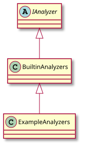

Example analyzers¶
You can use the following example analyzers as templates to get started using IDM-Tools:
Each example analyzer is configured to run with existing simulation data and already configured options, such as using the COMPS platform and existing experiments. This allows you to easily run these example analyzers for demonstrating some of the tasks you may want to accomplish when analyzing simulation output data. You can then use and modify these examples for your specific needs.
Note
To access and use COMPS you must receive approval and credentials from IDM. Send your request to support@idmod.org.
For a description of each of these analyzers please see the following:
AddAnalyzer: Gets metadata from simulations, maps to key:value pairs, and returns a .txt output file.CSVAnalyzer: Analyzes .csv output files from simulations and returns a .csv output file.DownloadAnalyzer: Downloads simulation output files for analysis on local computer resources.Multiple CSV Example: Analyzes multiple .csv output files from simulations and returns a .csv output file.
TagsAnalyzer: Analyzes tags from simulations and returns a .csv output file.
Each of the included example analyzers inherit from the built-in analyzers and the IAnalyzer abstract class:

For more information about the built-in analyzers, see Create an analyzer. There are also additional examples, such as forcing analyzers to use a specific working directory and how to perform partial analysis on only succeeded or failed simulations: